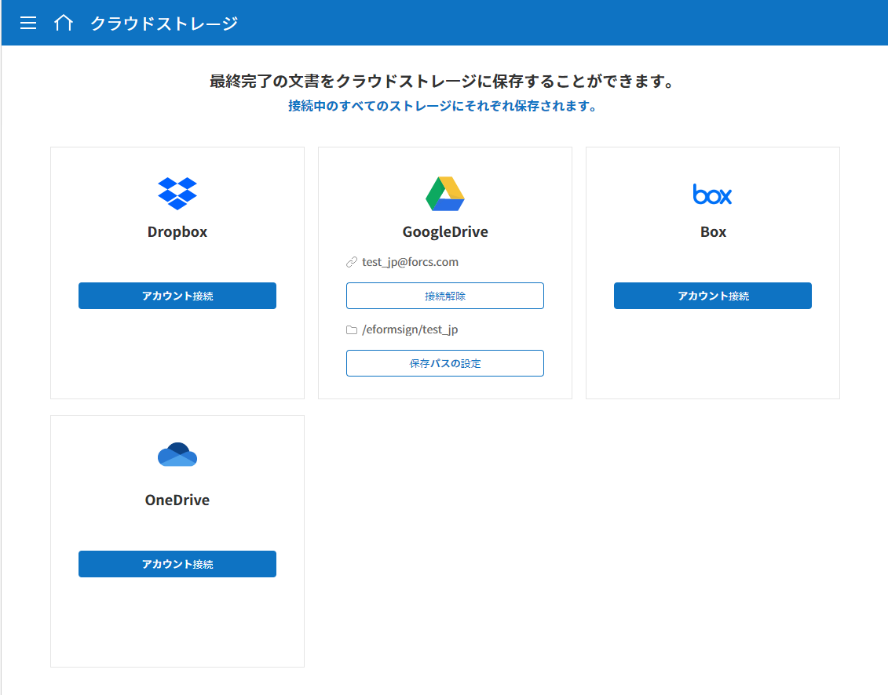

外部サービスとの連携
クラウドストレージとの連携方法
eformsignで作成した文書の完了後に、外部クラウドストレージサービスに自動的に保存されるよう設定することができます。
注釈
Dropbox、Google Drive、OneDrive、boxとの連携に対応しています。 外部クラウドストレージとの連携は 代表管理者のみ設定することができます。
メニューから コネクト > クラウドストレージに移動します。

完了文書を保存するクラウドストレージを選択後、 アカウント接続 ボタンをクリックしてログインします。
ログインすると、 接続解除と 保存パスの設定 ボタンが表示されます。必要に応じて 保存パスの設定 ボタンをクリックして、保存パスを設定します。

{kind=link}
注釈
保存パスの設定方法
デフォルトのパスには、eformsignのサブフォルダーとして会社名が入ります。 保存パス設定ポップアップで 新しいフォルダー ボタンをクリックすることで、新規フォルダーを作成し、保存パスを変更することもできます。

テンプレート管理 メニューに移動します。
クラウドストレージに保存したい文書のテンプレートをクリックし、テンプレートの設定 画面に移動します。
ワークフローの設定 メニューに移動します。
完了 ステップの属性タブで 別のクラウドストレージに完了文書を保存する にチェックを入れます。 クラウドストレージ メニューで設定したクラウドストレージが連携されていることを確認します。連携したテンプレートで文書を作成すると、文書の完了後に連携した外部ストレージサービスに、完了文書が自動的に保存されます。
{kind=link}
分析およびレポート
文書に入力したデータを、GoogleスプレッドシートもしくはOffice 365のエクセル文書に自動的に保存するよう設定できます。この機能を使うことで、新しい文書が追加される度にCSVファイルをダウンロードする手間を省くことができます。
注釈
分析およびレポートは 代表管理者のみ設定することができます。
{kind=link}
メニューの コネクト > 分析およびレポートに移動します。
Googleスプレッドシート、Office 365から連携するサービスを選択し、 アカウント接続 ボタンをクリックしてログインします。
{kind=link}
データ連携の設定 ボタンをクリックします。
{kind=link}
画面中央または右上にある データ連携の追加 ボタンをクリックします。
{kind=link}
接続名、データ連携シート、データの送信タイミング、テンプレートを設定し 保存 ボタンをクリックします。
{kind=link}
{kind=link}
注釈
データ連携シートとは、Googleシートでいう、シートのURLにあたります。
データ連携の設定 画面に、データが連携されたシートが表示されます。
{kind=link}
連携したシートに移動すると、データをインポートするカラム（フィールド）が表示されていることが確認できます。今後作成される文書において、文書にデータが入力される度に自動的にデータがアップデートされます。
{kind=link}